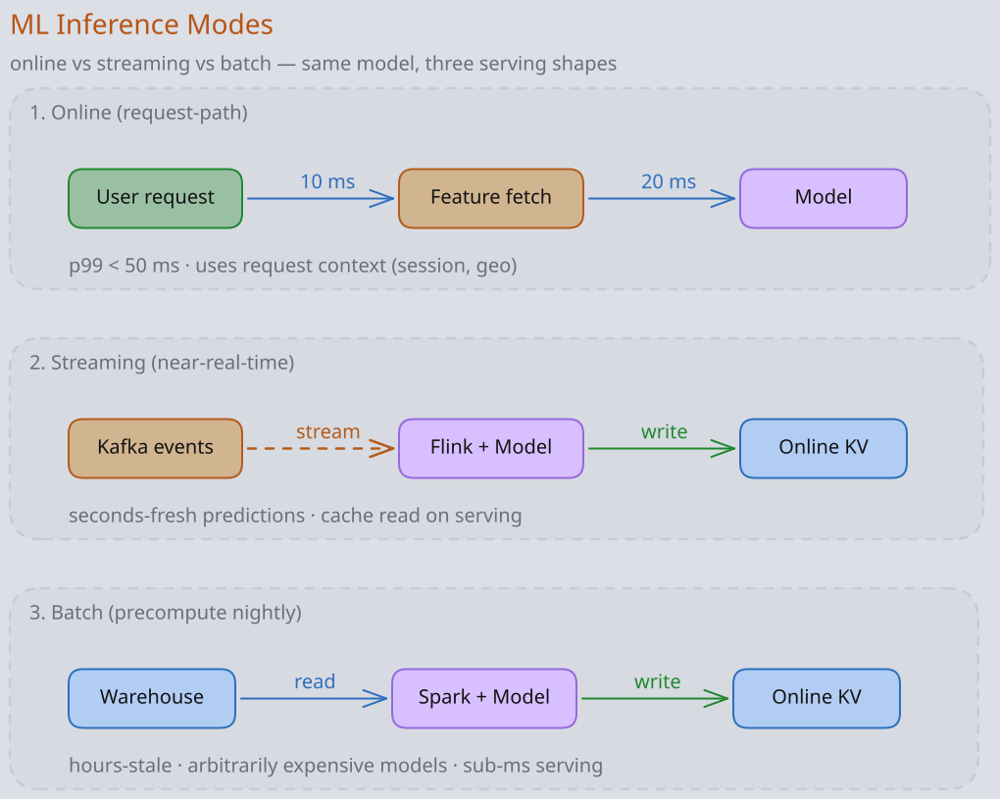
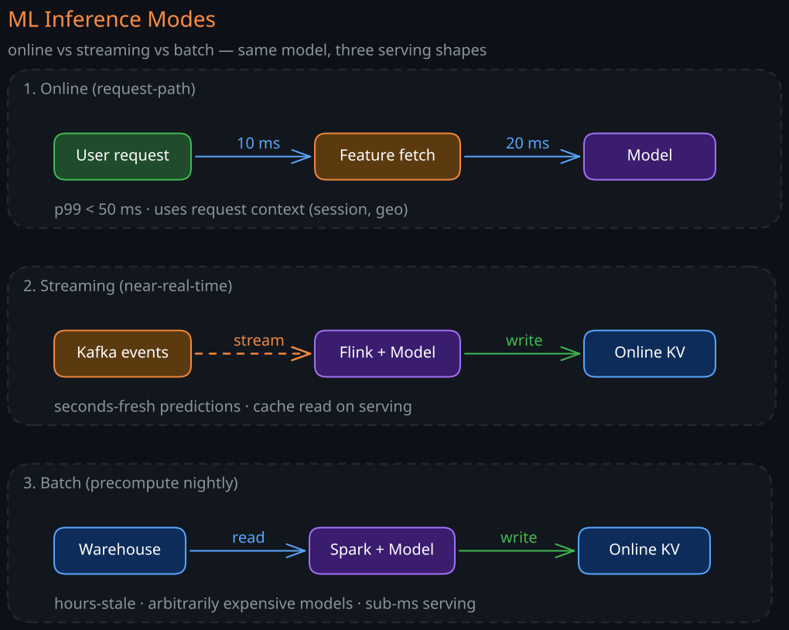

ML system design rounds at staff level are not about hyperparameters or model accuracy. They are about the system around the model — how data flows in, how predictions flow out, how the model is retrained safely, and how the whole thing fails. The model itself is usually the smallest box in the diagram. Everything else is what staff engineers are expected to own.
1. The Four Stages of an ML System
Every production ML system has four stages, and most failures happen between them, not inside them.
1. Data Collection and Labeling
Raw signal becomes training examples. The decisions made here propagate everywhere:
- Source of truth: clickstream, CDC stream, app events, third-party feeds. Each has different latency, completeness, and replay guarantees.
- Labeling strategy: human labels (slow, expensive, accurate), weak supervision (heuristics + noisy labels), self-supervised (the data labels itself — next-token, masked prediction), implicit feedback (clicks, dwell time, purchases).
- Label delay: a fraud label may take 60 days to settle (chargeback window). A click label is instant. The label delay decides how fresh your model can be.
2. Feature Engineering
Raw events become features the model can consume. Three properties matter:
- Determinism: the same input must produce the same feature vector at training and serving time. Drift here is the single most common cause of “the offline model was great but production is broken.”
- Freshness: a feature like “user clicks in the last 5 minutes” requires a streaming pipeline; “user lifetime spend” can be a batch job.
- Backfillability: if a new feature is added, can you compute its historical value for old training rows? If not, the model can never learn from it without waiting months for new data.
3. Training
Features and labels become a model artifact. Staff concerns are rarely about training algorithms — they are about reproducibility (same data + same code = same model), distributed training resource management, experiment tracking, and the path from notebook to production pipeline.
4. Serving and Feedback
The model artifact takes traffic, predictions become decisions, decisions generate new events, and the loop closes. The serving stage owns latency budgets, A/B infrastructure, observability, and the failover plan when the model misbehaves.
2. Online vs Batch vs Streaming Inference
The single most important architectural decision is when predictions are generated relative to when they are consumed.


1. Batch Inference
Predictions are precomputed offline and served from a key-value store. A nightly Spark job scores every user, writes (user_id → score) to DynamoDB or Redis, and the application reads it.
- Pros: serving is a cache lookup (sub-millisecond). The model can be arbitrarily expensive — the inference budget is hours, not milliseconds.
- Cons: predictions are stale (hours to a day old). Cannot react to context the model didn’t see at scoring time (current session, current location).
- When: churn scoring, daily recommendations, propensity models, anything where the input changes slowly.
2. Online (Synchronous) Inference
Predictions are computed in the request path. The application calls the model server, waits for the score, returns the response.
- Pros: predictions reflect the request’s full context — user, item, session, time, A/B bucket.
- Cons: every prediction adds latency to the user-facing request. The serving infrastructure must handle peak QPS with capacity to spare.
- When: ad click prediction, search ranking, fraud scoring, content moderation, anything personalised per request.
3. Streaming (Near-Real-Time) Inference
A stream processor (Flink, Spark Streaming) consumes events and writes predictions to a topic or key-value store within seconds. The application reads the latest prediction.
- Pros: low serving latency (cache read) plus near-fresh predictions.
- Cons: requires a streaming pipeline; debugging is harder; the model still cannot use request-time context.
- When: dynamic pricing, real-time recommendations on slow-changing inputs, IoT anomaly detection.
4. Edge / On-Device Inference
The model runs on the user’s device. Adds privacy and offline operation; subtracts model size and update flexibility.
The right answer is often a combination: precompute embeddings in batch, look them up online, run a small ranking model in the request path.
3. The Train-Serve Skew Problem
The most expensive class of ML bug. Symptom: offline metrics look great, online metrics are bad, no one can explain the gap.
Causes:
- Different code paths: training uses pandas in a notebook, serving uses Java in a microservice. The two implementations of “log(x + 1) then clip to [0, 10]” drift apart.
- Different data: training uses the last 90 days of joined warehouse tables; serving uses live event streams. Late-arriving data, deduplication, and timezone handling differ.
- Label leakage: a feature available at training time (e.g.,
total_session_clicks) is not yet known at the moment the model must predict. The model relies on a feature that doesn’t exist at serving. - Distribution shift: serving traffic differs from training distribution because the world changed (a holiday, a new market, a competitor launch).
Mitigations:
- Feature store: one definition of every feature, consumed by both training and serving. Discussed in 02-Feature-Stores.
- Point-in-time correctness: when building a training set, every feature value must reflect what was known at the time the label was generated, not the latest value.
- Shadow scoring: run the candidate model on live traffic without acting on its predictions; compare distributions to offline expectations.
4. The Feedback Loop Trap
Once a model influences which examples it sees next, the training data is no longer i.i.d. and the system can degenerate.
Examples:
- A recommender shows items it ranks highly. Users only click on what is shown. The model retrains on clicks, reinforces its prior beliefs, and over time only ever recommends a narrow slice of the catalogue.
- A fraud model blocks transactions it thinks are fraud. Those transactions never produce a settled fraud label. The model now has zero training signal on a region of the feature space and grows blind there.
- A loan model rejects applications it scores low. Those applicants never repay, so there is no label for whether they would have repaid. The model cannot improve on the rejection boundary.
Mitigations:
- Exploration: serve a random or epsilon-greedy slice of traffic with alternative items, accept the short-term cost, gain training signal.
- Counterfactual logging: log not just the action taken but the action that would have been taken under a different model; supports off-policy evaluation.
- Holdout populations: keep a small percentage of users on a baseline model or no model at all, to maintain an unbiased training signal.
5. Latency and Cost Budgets
Staff engineers must reason about both in concrete numbers.
1. Latency Decomposition
A 50 ms p99 budget for an online ML call breaks down roughly as:
- Network round trip + protocol: 5–10 ms.
- Feature fetch (online store): 5–15 ms (cache hit) or 50+ ms (cold).
- Feature transformation: 1–5 ms.
- Model inference: 5–30 ms depending on model and hardware.
- Postprocessing (calibration, business rules): 1–5 ms.
If the budget cannot accommodate this, the architecture is wrong, not the model. Common moves: precompute features into a hotter store, distill the model, move to a denser hardware (GPU, accelerator), batch requests at the server, or push to batch/streaming inference.
2. Cost Decomposition
- Training cost: dominated by
GPU/TPU hours × dataset epochs. For LLMs, often capex-class. - Serving cost:
QPS × cost per inference. Often dominates training over the model’s lifetime. - Data cost: storage of features, training datasets, prediction logs, plus the compute that produces them.
A useful rule: serving cost overtakes training cost within weeks for most production models. Optimise serving aggressively (quantisation, distillation, batching, autoscaling) before optimising training.
6. Model Lifecycle and Promotion
A staff-grade ML platform treats models like code: versioned, tested, promoted through environments, rollback-able.
The promotion ladder:
- Offline evaluation: held-out test set, slice metrics (per-segment, per-cohort), fairness checks. Gate on metrics that correlate with the business KPI, not just AUC.
- Shadow mode: candidate model serves alongside the production model; its predictions are logged but not acted on. Compare distributions, latency, error rates.
- Canary: small fraction of traffic (1–5%) routed to the candidate, monitored for online business metrics and guardrails (latency, error rate, blast radius).
- A/B test: a proper experiment with statistical power, success metrics defined in advance, guardrail metrics that auto-roll-back on regression. See 08-ML-Experimentation-and-AB-Testing.
- Full ramp: candidate becomes new production. Old model retained for fast rollback.
The artefacts needed at every stage: model binary, feature schema, training data lineage, evaluation report, and the metadata to recreate the model bit-for-bit.
7. Monitoring an ML System
Traditional service monitoring (latency, error rate, throughput) is necessary but insufficient. ML systems also need:
- Prediction distribution drift: the distribution of scores the model outputs today vs a week ago. Sudden shifts often precede metric regressions.
- Feature drift: per-feature distribution comparison (PSI, KL divergence). Catches upstream pipeline bugs and real-world shifts.
- Label drift: the distribution of labels themselves. Spikes in fraud rate, churn rate, etc.
- Outcome lag: the gap between predictions and labels reflects how stale your training data is. Important when labels arrive days after predictions.
- Slice metrics: AUC and business KPIs broken down by cohort (geo, device, tenure, segment). A model can hold its global metric while regressing badly on a key cohort.
- Constraint violations: predictions out of expected range, calibration drift, NaN inputs, schema mismatches.
A drift alert that wakes someone at 3 AM should be tied to a concrete remediation: rollback to the previous model, freeze training on contaminated data, fall back to a heuristic. Drift alerts without playbooks just train people to ignore alerts.
8. Common Staff-Round Reference Architectures
When asked to design “the ML system behind X”, three skeletons cover most cases:
1. Personalised Ranking (feeds, recommendations, search)
Candidate generation (retrieve thousands from millions, cheaply) → ranking (score hundreds with a heavier model) → re-ranking (apply business rules, diversification, freshness). Deep dive in 07-Recommendation-Systems.
2. Real-Time Classification (fraud, abuse, content moderation)
Event ingestion → feature computation (online + streaming aggregates) → model inference → action (allow, block, review). Asynchronous label collection feeds retraining.
3. LLM-Backed Application (assistants, RAG, agents)
User query → retrieval (03-Embeddings-and-Vector-Databases) → prompt assembly → LLM inference (06-LLM-Serving-Internals) → response post-processing → feedback capture. See 04-RAG-Architecture.
Knowing these three skeletons cold lets you reframe almost any ML design question and move quickly to the parts where staff-level depth differentiates.
Revision Summary
- Production ML has four stages — data, features, training, serving — and most failures live between stages, not within them.
- Inference style (batch, streaming, online, edge) is the architectural pivot; it sets latency budgets, freshness, and cost.
- Train-serve skew is the most expensive class of ML bug; feature stores and point-in-time correctness are the primary defences.
- Feedback loops bias the training data the system collects, and need explicit exploration or holdouts to break.
- Latency and cost budgets must be reasoned about quantitatively, with serving cost typically dominating over a model’s lifetime.
- The model promotion ladder (offline → shadow → canary → A/B → ramp) is the staff-grade analog of CI/CD for code.
- ML monitoring needs prediction, feature, and label drift on top of standard service metrics, each tied to a concrete remediation.
- Three reference architectures (ranking, real-time classification, LLM/RAG) cover most staff-round questions and let you decompose any ML design quickly.
Deep Understanding Questions
- A team reports their model has 0.85 AUC offline but no measurable business lift in the A/B test. What are the three most likely causes, and how would you investigate each?
- You discover that a key feature
user_total_purchasesis computed differently in the training pipeline (warehouse SQL) and in the serving path (Java aggregation over Redis). How do you fix this without retraining every model that depends on it? - A fraud model blocks 0.5% of transactions. Six months later, model performance is silently degrading on a segment of merchants. Explain how the feedback loop could be the root cause and what telemetry would have caught it earlier.
- Your real-time recommender has a p99 latency budget of 40 ms. The current architecture costs 70 ms p99. List the architectural moves available, in order of effort, and the tradeoffs each makes.
- A new model in shadow mode has near-identical offline metrics but its score distribution is shifted +0.1 versus production. Would you promote it? What would you measure first?
- Label delay for your churn model is 30 days. A new feature is added today. What is the earliest the model can responsibly use it, and what compromises (if any) could let you use it sooner?
- You inherit an ML platform where every team retrains models on a custom Airflow DAG. What are the staff-level risks of this, and what would the equivalent of CI/CD for models look like?
- The product team asks for “real-time personalisation.” How do you decide between online inference, streaming inference, or batch precomputation with a streaming refresh, and what data do you need to make that decision?